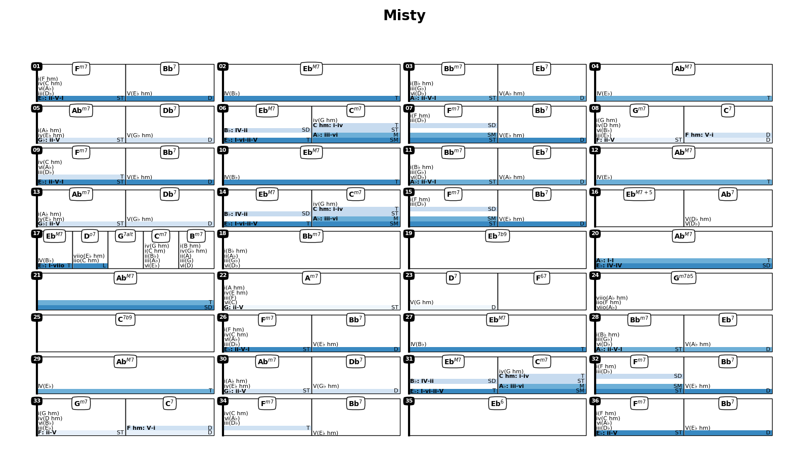
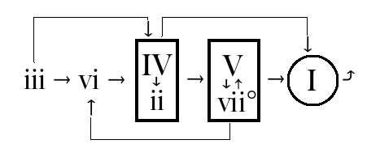
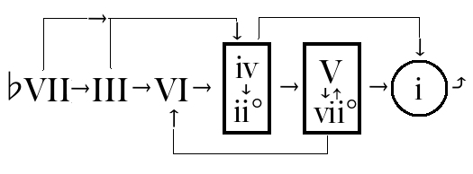

jazzElements¶
The primary goal of this package is to help in the analysis of a chord progression and facilitate learning of jazz standards. It will also suggest alternative chords, progressions, scales etc For example, we can enter a progression as a string, ask to analyse then plot the results. Each cell shows the chord, its degree in the corresponding scale, and optionally the corresponding notes.
The full documentation can be found on ReadTheDocs
Hint
The best resource i found to learn about jazz and music theory, check it out:
- “WalkThatBass” youtube channel.
- “TheJazzPianoSite” website.
Warning
I am coding this in parallel to trying to finally understand music theory. This is in active dev with surely a good amount of hacks and bugs. Feel free to contribute/submit issues or ideas.
A chord progression can be defined using a chord string (e.g. ‘|DbM7,E9|AM7,C9|FM7|Bm9,E9|AM7,C9|FM7,Ab9|’) or using a named progression (e.g. ‘Misty’) We can then annotate a chord progression:
>>> prg = Progression('Misty')
>>> prg.annotate()
>>> prg.plot('fn')
- and plot the harmonic analysis
- 
{kind=link}
or a keyboard representation of chords (top) and scales (bottom):
>>> prg.plot('kbd')
{kind=link}
The analysis can be made for example using the major/minor chord progression from the book Tonal Harmony by Stefan Kostka

Major Kostka Progression |

Minor Kostka Progression |
Plot all Chords in a given Scale:
>>> Scale('C minor').plotChords()
{kind=link}
Plot m7 for all roots:

Plot implemented chords: